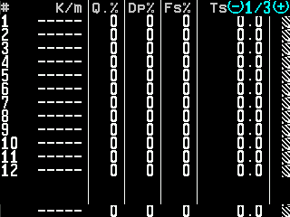
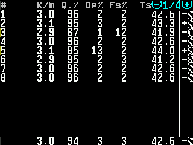
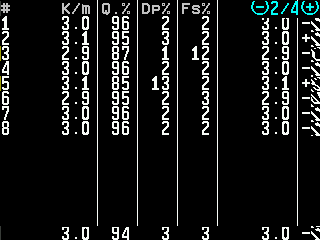
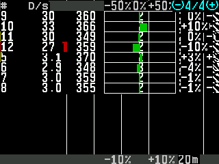
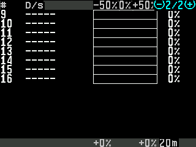
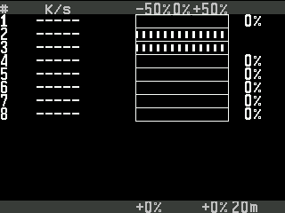

Der Bildschirm Saattabelle
Die Messwerte jeder Saatreihe als Zahlen, eine Zeile je Reihe — welche Tabellen Ihre Maschine hat, was jede Spalte und Farbe bedeutet und wie Sie die Werte zurücksetzen.
Die Saattabelle beantwortet, was das Diagramm auf dem Startbildschirm nicht beantworten kann: Welche Reihe genau, und um wie viel. Öffnen Sie sie mit „HOME“ vom Startbildschirm aus; das nächste „HOME“ führt weiter zum Bildschirm Statistik, „BACK“ zurück zum Startbildschirm.
Die Zahlen gehören zur Arbeitssitzung: Sie zählen ab dem Einschalten und gehen beim Ausschalten verloren. Die Feldstatistik wird getrennt geführt — siehe Der Bildschirm Statistik.
Was die Tabelle zeigt

- Zeilennummer — die Saatreihe, in der Reihenfolge der Reihen der Maschine.
- K/m — die jetzt gemessene Menge, in Körnern je Meter. ----- — die Reihe wird überwacht, sät aber nicht.
- Q.% — Qualität: der Anteil der Körner, die wie vorgesehen einzeln abgelegt wurden.
- Dp% — Doppelbelegungen: zwei Körner, wo eines vorgesehen war.
- Fs% — Fehlstellen: eine Lücke, wo ein Korn vorgesehen war.
- Seitenanzeige — diese Tabelle und die Zahl der Tabellen, zwischen den Zeichen von „MINUS“ und „PLUS“, den Tasten, die die Tabelle wechseln. Fehlt, wenn es nur eine Tabelle gibt.
- Aussaatdichte der Reihe, in Tausend Körnern je Hektar.
- Mittelwerte über alle überwachten Reihen. Bei zwei Sensorgruppen zwei solche Zeilen, A und B.
Die Spalten 3 bis 7 gehören zum zuletzt abgeschlossenen Neuberechnungsintervall — der Wegstrecke, die „Neuberechn.,m“ einstellt (oder „Neuberechn.,Sek“ ohne Geschwindigkeitssensor), unten rechts angezeigt. Nur Spalte 2 ist ein Live-Wert. Nach dem Anhalten der Maschine bleiben die Werte des letzten Intervalls auf dem Bildschirm stehen, damit Sie sie in Ruhe ablesen können. Eine weitere Spalte, %, gibt die Abweichung jeder Reihe vom Sollwert an, mit Vorzeichen; positiv heißt mehr Körner und engerer Abstand.
Welche Tabellen Ihre Maschine hat
| Tabelle | Angezeigt, wenn |
|---|---|
| Menge je Fläche (Aussaatdichte, Tsd/ha), Menge je Strecke (Körner je Meter) | Saatgut im Modus „Einzelkorn“. |
| Kornzähler | Immer. |
| Trockendünger | Es gibt Düngersensoren, und ihr Modus ist nicht „Einzelkorn“. |
| Flüssigdünger | Es gibt Flüssigdüngersensoren. |
Eine Einzelkornsämaschine mit Saatgut im Modus „Einzelkorn“ und Trockendüngersensoren hat vier Tabellen. „PLUS“ führt zur nächsten, „MINUS“ zur vorigen; die Seitenanzeige oben rechts zeigt, in welcher Sie sind.




Stehen Saatgut und Dünger beide auf „Einzelkorn“, erscheinen die Düngerreihen in den Saattabellen als Gruppe B, in hellgelber Schrift.

In der Tabelle Kornzähler läuft der Balken zwischen der zulässigen Abweichung „Mengenfehl.%“ beiderseits des Sollwerts — nicht auf einer festen Skala. In den Modi „Durchfluss“ und „Hybrid“ ist die Skala fest auf −50 % bis +50 % gesetzt. Die linke Spalte zeigt dann Körner je Sekunde statt Körner je Meter.
Zeichen und Farben
| In der Mengenspalte | Bedeutung |
|---|---|
| ----- | Überwacht, sät gerade nicht. |
| ! ---, ganze Zeile grau | Aus der Überwachung genommen. |
| X ---, ganze Zeile dunkelrot | Keine Verbindung zu diesem Sensor. |
| ? ---, ganze Zeile dunkelrot | Hier antwortet ein Sensor falscher Art. |
Während der Aussaat wird eine Zelle gelb, wenn sie mehr als die Hälfte der zulässigen Abweichung erreicht, und rot, wenn sie sie überschreitet. Die Grenzen sind „Mengenfehl.%“, „Doppelfehler,%“ und „Fehlst.Fehl,%“ der Kornsensoren; ist die Prüfung der Doppelbelegungen oder Fehlstellen ausgeschaltet, gilt „Skala F&D,%“. Die Zeilennummer färbt sich gelb oder rot wie ihre schlechteste Zelle, sodass sich die auffällige Reihe auf einen Blick finden lässt.
Tasten
| Taste | Was sie bewirkt |
|---|---|
| „PLUS“ / „MINUS“ | Nächste / vorige Tabelle. |
| „DOWN“ / „UP“ | Eine Zeile blättern. Eine Berührung ist eine Zeile. |
| „MENU“ | Fragt „Werte zurücksetzen?“ — Werte zurücksetzen. |
| „HOME“ | Statistik. |
| „BACK“ | Startbildschirm. |
Die Tabelle selbst reagiert nicht auf Berührung.
Düngertabellen und Fahrgassenzeilen

Die Tabelle Trockendünger ist wie die Tabelle Kornzähler aufgebaut, mit D/m im Modus „Hybrid“ oder D/s im Modus „Durchfluss“; die Stückzahl wird nur angezeigt, wenn „Körner immer zählen“ eingeschaltet ist. Die Tabelle Flüssigdünger zeigt je Reihe den Fluss und die ausgebrachten Liter, mit L/ha oder L/min nach „Modus Flüssigd.“, und hat keinen Abweichungsbalken.
Eine für eine Fahrgasse abgeschaltete Reihe zeigt nur ihre Nummer und den Fluss; die übrigen Spalten sind gestrichelt. Hier warnen Gelb und Rot, dass mehr Saatgut in die Fahrgasse fällt, als „Zul. Saat in Fahrgasse,%“ erlaubt.

Ihre Maschine tut etwas, das diese Seite nicht beantwortet? Schreiben Sie an support@agriwelt.com — es antwortet ein Ingenieur.